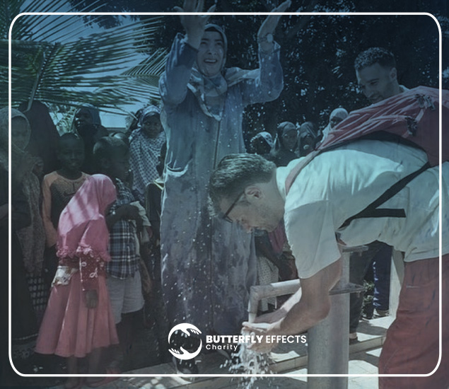
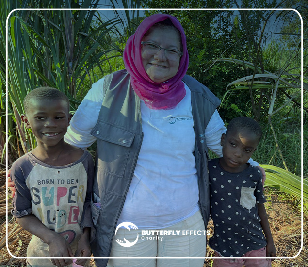
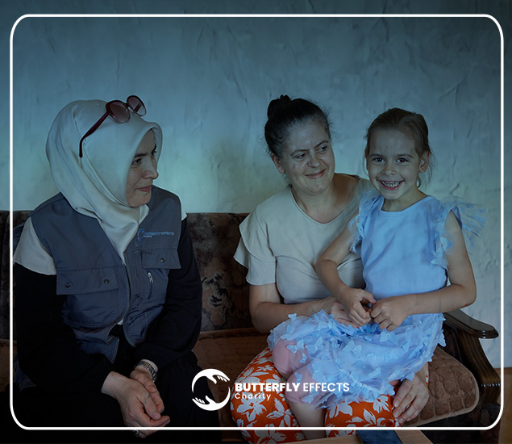
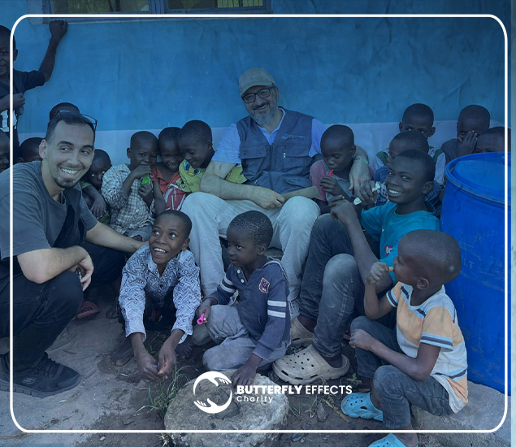

Wasser
Zugang zu sauberem Wasser
Brunnen und Versorgungslösungen verbessern Gesundheit und Alltag.
Projekt ansehen ↗Unsere Projekte
Von sauberem Wasser bis Bildung: Unsere Projekte verbinden unmittelbare Unterstützung mit langfristigen Perspektiven.
Aktiv helfen
Die Projekttexte basieren auf dem bestehenden Angebot und werden in der nächsten Phase mit aktuellen Orten, Laufzeiten und Wirkungsdaten ergänzt.

Brunnen und Versorgungslösungen verbessern Gesundheit und Alltag.
Projekt ansehen ↗


Lebensmittelhilfe und solidarische Unterstützung für Bedürftige.
Projekt ansehen ↗So wählen wir Projekte
Wir klären, wer Unterstützung benötigt und welche Situation vorliegt.
Dringlichkeit, Schutzbedarf und langfristiger Nutzen werden bewertet.
Maßnahmen werden mit Verantwortlichen und Helfenden koordiniert.
Ergebnisse werden dokumentiert und für Unterstützende aufbereitet.